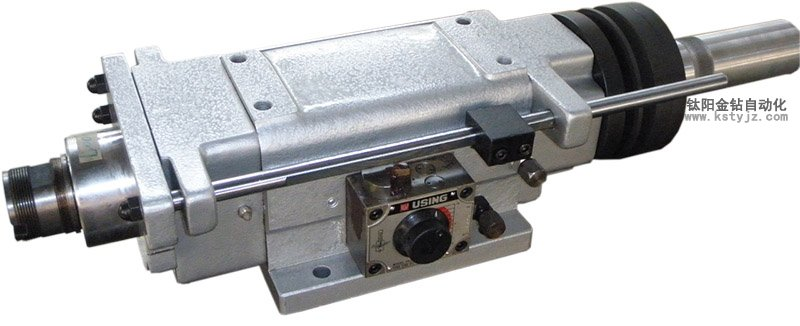
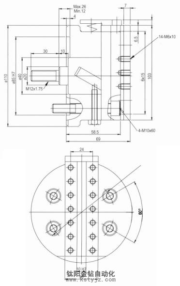
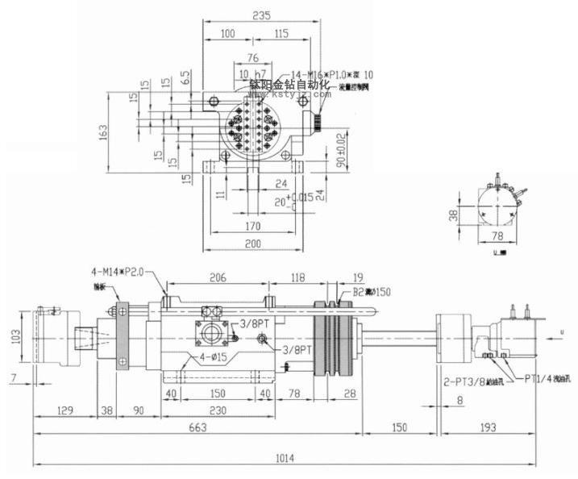

收藏本站
|
在線留言
|
常見問題解答
|
聯繫鈦陽
歡迎訪問鈦陽金鑽官方網站！
鈦陽首頁
公司簡介
標準機
非標機
定制攻牙機非標設備
多軸器
產品演示
新聞資訊
技術支持
聯繫鈦陽
當前位置：
主頁
>
標準機
>
鑽孔動力頭
>
D8-150展刀搪溝頭
文章出處：未知
責任編輯：kstyjz
人氣：
發表時間：2014-05-27 11:03


項目參數
契心形成
滑座形成直徑
油壓缸推力
最高回轉數
重量
備註
FA-408
14mm
8mm
10kg2
1600rpm
55kg
鈦陽金鑽牌

*
攻牙主軸全系（高速碳鋼），強制扭力強不變形特殊工 程，依步驟處理（車削、熱處理、研磨、牙數在精度研磨使牙數光滑耐磨）。
*
牙規銅採用青銅（車削、研磨牙數）。
*
耐磨、耐用。
1.
專利說明
2.
精密鑽孔主軸頭（馬達型）
3.
精密鑽孔主軸頭
4.
精密鑽孔、多段、穩速、主軸頭（馬達型）
5.
精密攻牙主軸頭（馬達型）
6.
精密鑽孔主軸頭
7.
精密、立式升降機、鑽孔、
攻牙機
專用
8.
精密、鑽孔、攻牙、主軸頭（雙孔立式）
9.
精密、鑽孔、攻牙、主軸頭（雙孔型臥式）
10.
精密、鑽孔、攻牙、主軸頭（雙孔型立式）
11.
精密、搪孔、主軸頭
項目
形式
D8-150鑽孔主軸頭
鈦陽金鑽牌
最大鑽孔能力：
Ø25m/m
主軸轉速：
1500rpm
主軸行程：
150mm
使用壓力：
20-25kg
夾頭型能：
MT-3#,ER-40,MT-3#M
淨重：
65kg
上一篇：
D9-150鑽孔主軸頭
| 下一篇：
D8-150鑽孔主軸頭
此文關鍵字：
項目
D8-150
展刀
搪溝頭
契心
形成
滑座
參數
返回鈦陽首頁>>
相關資訊
氣壓式D3-100鑽孔動力頭-鈦陽金鑽自動化
昆山鑽孔攻牙機動力頭動力頭報價動力頭
FD66-100油壓式鑽孔動力頭-鈦陽金鑽動力頭
鈦陽金鑽FD78-100鑽孔動力頭
油壓式鑽孔動力頭
動力頭-鑽孔攻牙機動力頭D5-85
D3-80鑽孔主軸頭
D3-60鑽孔主軸頭
D5-85鑽孔主軸頭
D3-100鑽孔主軸頭
推薦產品
JT1-203立式自動攻牙機
JT2-223立式自動攻牙機
JT3-231立式自動攻牙機
JT1-204臥式自動攻牙機
推薦文章
影響電動攻牙機性能的
何以自動攻牙機可以做
攻螺紋前鑽底孔直徑和
鑽孔機如何選擇,台式自
攻牙油 百 科
自動鑽床自動攻牙機離
SPS-全自動鑽孔倒角攻牙
攻牙機原理,多功能機床
動力頭基本構造及相關
自動攻牙機深孔。小孔
最新資訊文章
影響電動攻牙機性能的
何以自動攻牙機可以做
攻螺紋前鑽底孔直徑和
鑽孔機如何選擇,台式自
攻牙油 百 科
攻牙機發展進程中〞急
三大因素影響自動攻牙
自動鑽床自動攻牙機離
台式攻牙機,台式鑽床
SPS-全自動鑽孔倒角攻牙